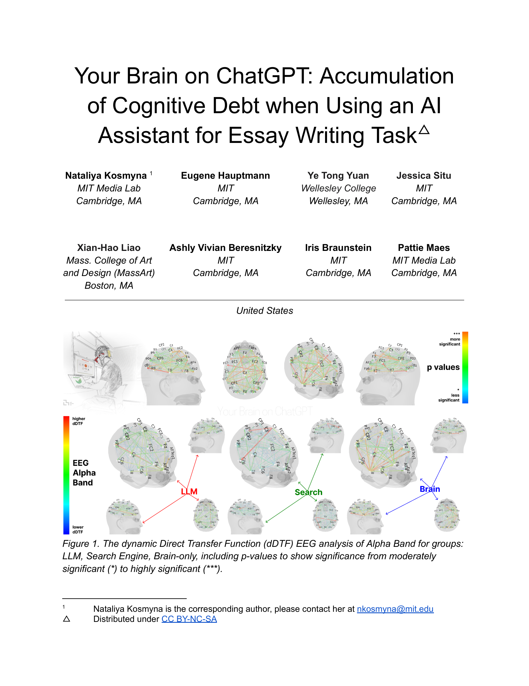

Figure 1
LLM(ChatGPT) 보조 에세이 작성이 인간의 뇌 연결성과 인지 기능에 미치는 영향을 EEG 기반 신경생리학적 분석과 NLP 분석, 행동 인터뷰를 통해 4개월에 걸쳐 종단적으로 조사한 연구이다. 54명의 참가자를 LLM 그룹, 검색엔진 그룹, Brain-only(도구 미사용) 그룹으로 나누어 3회의 에세이 세션을 진행하고, 4번째 세션에서는 조건을 교차(LLM→Brain, Brain→LLM)하여 "인지적 부채(Cognitive Debt)" 의 축적과 회복 가능성을 탐구하였다.
ChatGPT 등 LLM의 교육 현장 도입이 급격히 확산되고 있으나, LLM 사용이 학습자의 인지 과정에 미치는 장기적 영향에 대한 신경과학적 근거는 부족한 상태이다. 기존 연구들은 주로 행동 데이터나 자기보고에 의존하였으며, 뇌 수준에서의 연결성 변화와 인지 부하의 체계적 비교는 거의 수행되지 않았다. 이 연구는 EEG의 directed Transfer Function(dDTF) 분석을 통해 도구 사용이 뇌의 기능적 네트워크 구조를 어떻게 재편하는지 직접 측정하고자 했다.
| 항목 | 점수 (5점 만점) | 비고 |
|---|---|---|
| **참신성 (Novelty)** | 4.5 | EEG 종단 연구 + 조건 교차 설계는 매우 독창적 |
| **기술적 완성도 (Soundness)** | 3.5 | dDTF 분석은 견고하나, 표본 크기가 작고 스펙트럼 파워 분석 미포함 |
| **실험 설계 (Experimental Design)** | 4.0 | 3그룹 × 4세션 + 교차 설계는 우수하나, 검색엔진 그룹의 세션 4 부재 |
| **영향력 (Impact)** | 4.5 | AI 교육 정책에 직접적 시사점을 제공하는 시의적절한 연구 |
| **표현 (Presentation)** | 3.5 | 206페이지의 방대한 분량; 핵심 메시지가 다소 분산 |
| **종합 (Overall)** | 4.0 | LLM 사용의 인지적 비용에 대한 신경과학적 근거를 최초로 제시한 중요 연구 |
AI 보조 도구의 편리함 이면에 숨겨진 인지적 비용을 신경과학적 수준에서 처음으로 실증한 선구적 연구이다. 특히 세션 4의 조건 교차 실험은 "인지적 부채"가 축적되며, 사전 자립적 학습 경험이 이를 완충할 수 있음을 보여주는 핵심 발견이다. 다만, 표본 규모의 한계와 과제 특수성은 결과의 일반화에 주의를 요한다. 교육 현장에서 AI 도구 도입 전략을 수립할 때 반드시 참고해야 할 연구로, 후속 fMRI 연구와 대규모 종단 연구가 기대된다.